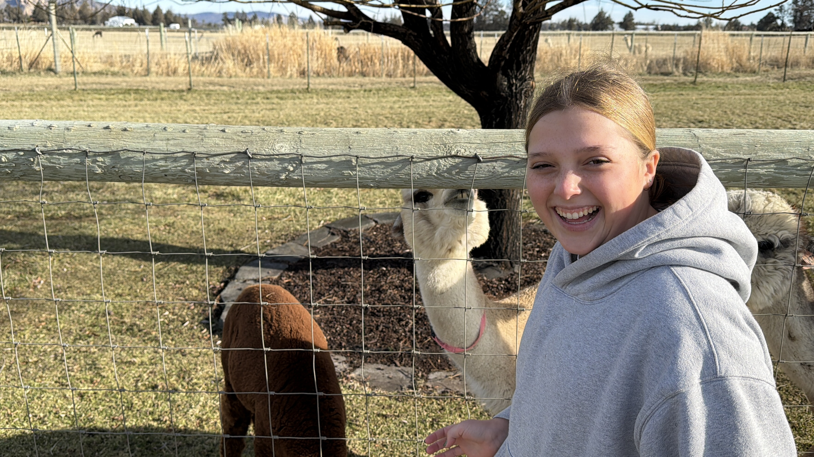
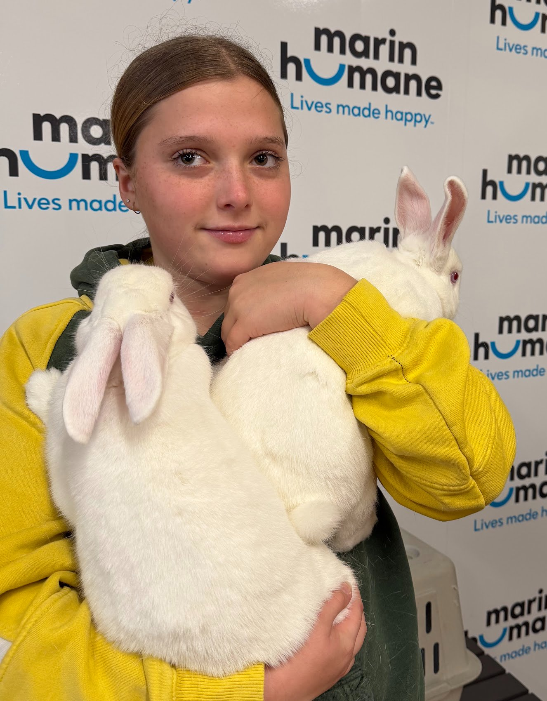
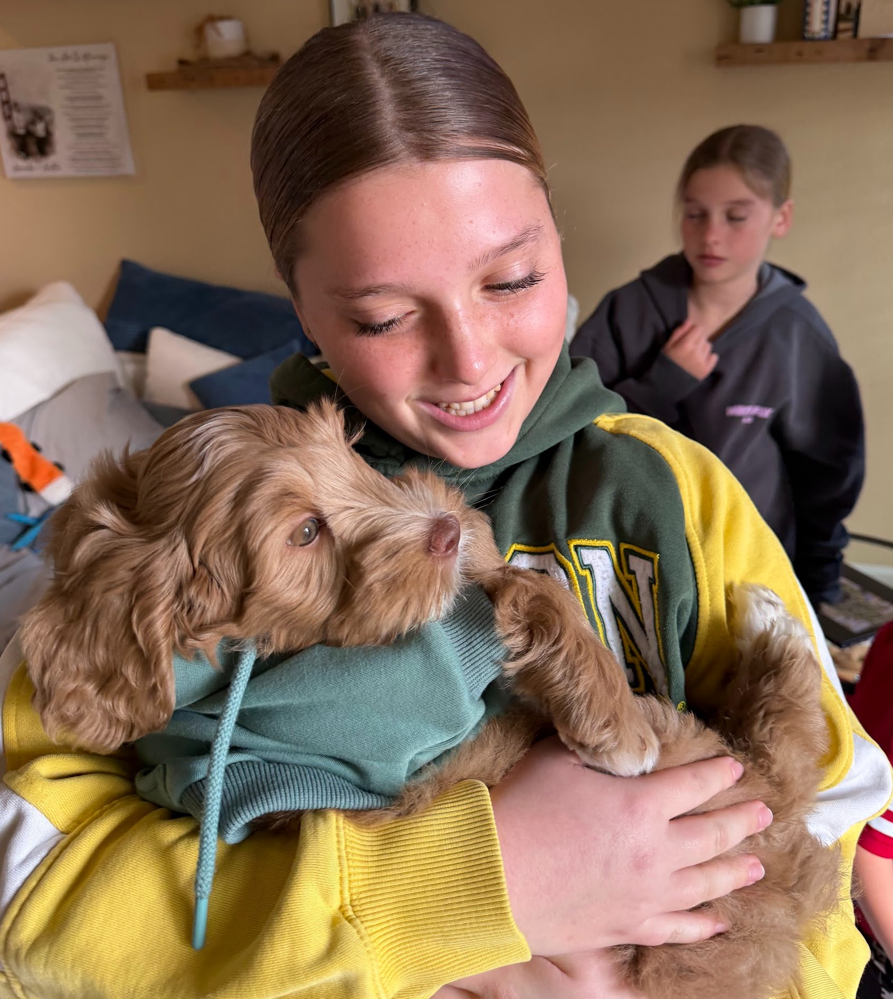
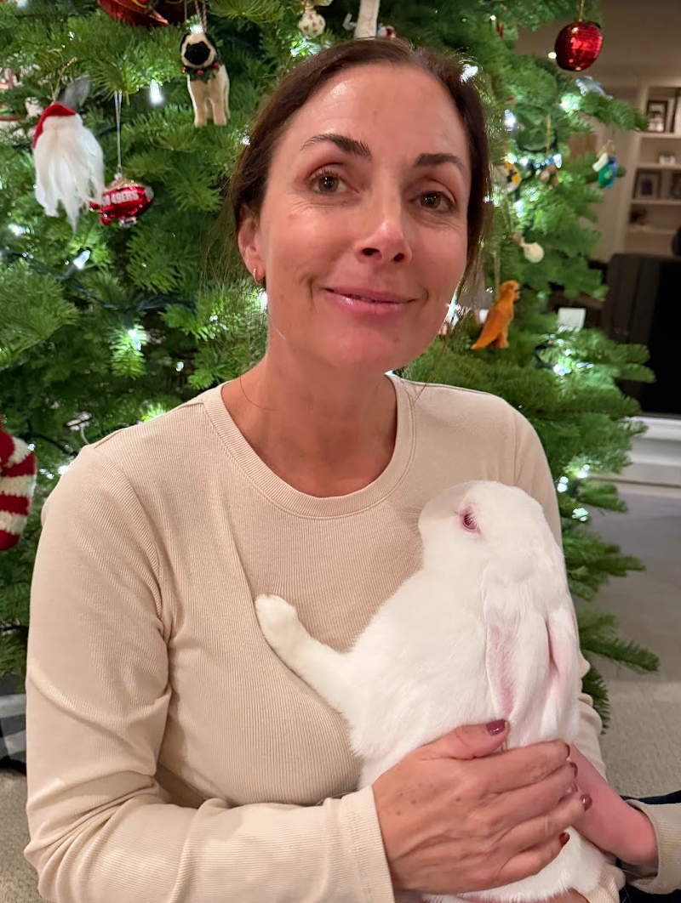

We collect and donate pet supplies to local animal shelters — because love isn't the only thing these animals need. Food, bedding, toys, and care make a real difference.
Our Mission
Animal shelters do incredible work — but they're often underfunded and under-supplied. Paws & Purpose was born from a simple belief: we can help fill those gaps, one donation at a time.
View Donation HistoryWe organize regular donation drives collecting food, bedding, toys, and medical supplies for shelters in need.
We foster animals in need — from bunnies to kittens — giving them a safe, loving home until adoption.
Regular hands-on shelter volunteering — walking dogs, socializing cats, and supporting shelter staff.
Shining a light on local shelters and the animals in their care, helping them find forever homes.
Donation History
A running record of every donation we've made to shelters in our area — updated live from our tracker.
Volunteer Hours
Beyond supplies, showing up in person matters. Every hour spent at the shelter is an hour an animal feels seen, loved, and cared for.
Foster Animals
These wonderful creatures have stayed with us on their journey to a forever home. Each one has stolen a piece of our hearts.
Our Sponsors
These generous businesses and individuals make our work possible. Their support directly funds shelter donations and supplies.
Leadership Team
Meet the passionate young leader who started it all — driven by love for animals and a belief that one person really can make a difference.



Addy is a middle school student with a heart as big as her ambitions. From fostering rabbits at the local humane society to organizing supply drives for animal shelters, she has turned her love for animals into real, tangible change in her community.
An aspiring veterinarian, Addy believes that every animal deserves to feel safe, loved, and cared for — and she's not waiting until she grows up to do something about it. Whether she's volunteering at the shelter on weekends, tending to a foster bunny at home, or fundraising for supplies, Addy shows up with energy, compassion, and purpose.
Beyond her passion for animals, Addy loves the outdoors and believes strongly in giving back to her local community and making an impact that ripples far beyond her own backyard.
"Every animal deserves someone in their corner. I want to be that someone." — Addy Davis
Ryan is a dedicated board member of Paws & Purpose, bringing leadership, strategic thinking, and a deep commitment to the organization's mission. His support helps ensure that Addy's vision translates into lasting impact for animals and shelters throughout the community.

Gina is a passionate board member of Paws & Purpose who shares Addy's deep love for animals. As a hands-on supporter of the organization's foster program and community outreach, Gina brings warmth, dedication, and a genuine commitment to making life better for shelter animals everywhere.
Contact Us
Whether you want to donate supplies, become a sponsor, inquire about volunteering, or just say hello — Addy would love to hear from you.